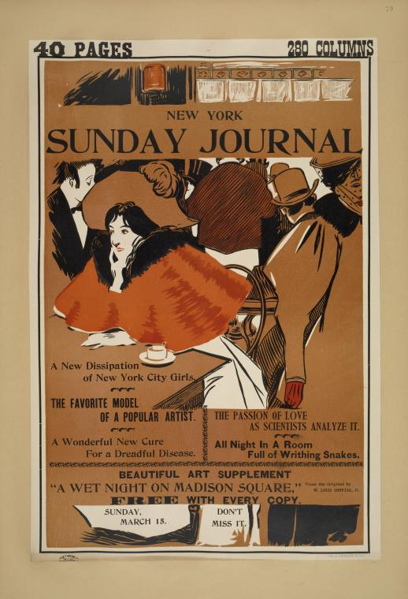

Boston Sunday herald. A new opera house [...]
Boston Sunday herald. Boston herald opera house. Sunday, March 22.
The Boston Sunday herald. March 3.
The Boston Sunday herald. Complete dramatic news.
The Boston Sunday herald. Ladies all want the fashion supplement.
The Boston Sunday herald. Feb. 10.
The Boston Sunday herald. Feb 17, 1895.
Cleveland leader. Sunday, Aug. 4th, 1895.
New York Sunday herald. May 24th 1896.
New York herald. Sunday Jan 26th 1896.
New York Sunday journal. February 16th. 1896.
New York Sunday journal. February 2nd. 1896.
The Sunday journal. Sunday, Aug. 16. 1896.
The New York Sunday journal. Dec. 1896.
 New York Sunday journal. Sunday, March 5.
New York Sunday journal. Sunday, March 29th, 1896.
New York Sunday journal. May 10.
The Sunday world. April 9th. 1896.